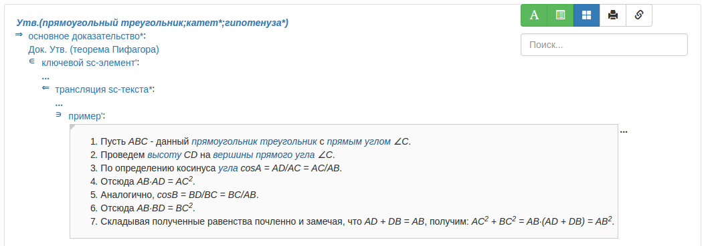

Задачей
команды вывода текста доказательства утверждения на естественном языке
является вывод констрункции, содержащей
основное доказательство*
утверждения.
Единственным аргументом агента является знак
утверждения
, для которого необходимо вывести доказательство.
